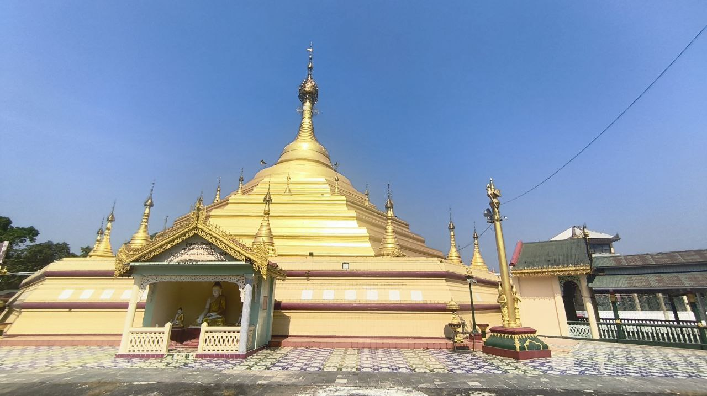
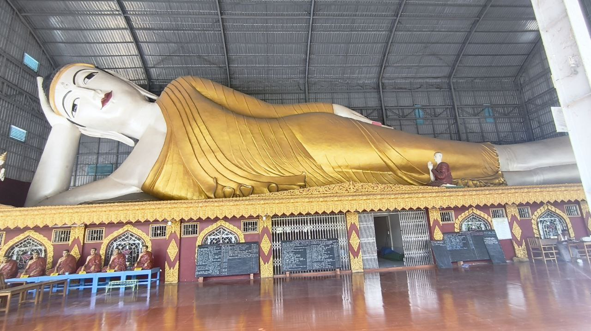
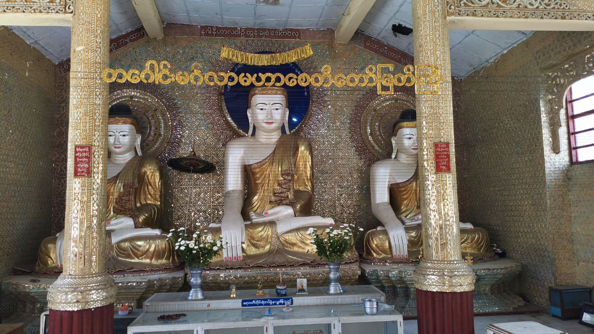

တကောင်းဘုရားမှာ တိတိကျကျ ခွဲခြားအမည်ထားတဲ့ ဘုရားတွေအများကြီး စာရင်းမရှိသေးဘူး။ ဒါပေမယ့် ပုသိမ်မြို့တွင်းမှာ အခြားသက်တမ်းရှည် ဘုရားအချို့လည်းရှိပါတယ်၊ ဥပမာ –
- ရွှေမိုးခေါင်းတော် မဟာစေတီ (Shwemokhtaw Pagoda) – ပုသိမ်ရဲ့ အဓိကမဟာစေတီတော်, သီဟိုဠ်ရှင်ဘုန်းတော်ပြည့်ဘုရားပါရှိသည်။
- လေးကျွန်းမာရ်အောင် ဖောင်တော်ဦးစေတီ (Phaung Daw U Pagoda) – ပုသိမ်နယ်တွင်း ထင်ရှားသော ဘုရားတစ်ဆူဖြစ်ပါသည်။


